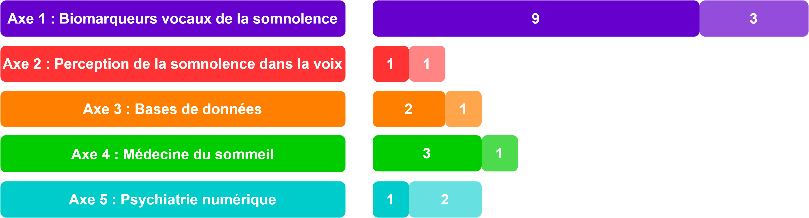

Toutes mes publications sont disponibles sur ma page ResearchGate. Toutes les publications listées ci-dessous ont fait l'objet d'une évaluation par les pairs (peer-reviewed).
Un résumé des publications par axe de recherche est représenté ci-dessous (les rectangles plus clairs représentent les articles en cours d'évaluation par les pairs) :

2023
Revues internationales
- Systematic Item Content and Overlap Analysis of Self-reported Multiple Sleep Disorders Screening Questionnaires in Adults C. Gauld, V. P. Martin, A. Richaud, S. Bailleul, L. Vicente, J.-L. Perromat, I. Zreik, J. Taillard, P.-A. Geoffroy, R. Lopez, J.-A. Micoulaud-Franchi. Journal of Clinical Medicine, 2023. [lien]
- Sleepiness in adults: An umbrella review of a complex construct V. P. Martin, R. Lopez, Y. Dauvilliers, J.-L. Rouas, P. Philip, J.-A. Micoulaud-Franchi. Sleep Medicine Reviews, 2023. [lien] [pdf]
Conférences internationales
- Prediction of Sleepiness Ratings from Voice by Man and Machine: the Endymion replication study V.P. Martin, A. Ferron, J.-L. Rouas, P. Philip. ICASSP 2023.
2022
Revues internationales
- How does comparison with artificial intelligence shed light on the way clinicians reason? A cross-talk perspective V. P. Martin, J.-L. Rouas, P. Philip, P. Fourneret, J.-A. Micoulaud-Franchi, C. Gauld. Frontiers in Psychiatry, 2022. [lien]
Revues nationales
- Que nous disent les outils de mesure de la somnolence chez l'adulte? V. P. Martin, J. Taillard, J. Rubenstein, P. Philip, R. Lopez, J.-A. Micoulaud-Franchi. Médecine du Sommeil, 2022. [lien] [pdf]
Conférences nationales
- Est-il possible d'annoter la naturalité des pauses lors de la lecture d'un texte à haute voix ? V. P. Martin, J.-L. Rouas, A. Basse, B. Caudron, M. Huillet, et P. Philip, Journées d'Étude de la Parole 2022 [lien]
Posters avec résumé étendu évalué par les pairs
- Qu'est ce que la communauté scientifique associe au terme ''somnolence" ? Une première analyse sémantique automatisée. C. Gauld, V. P. Martin, J. Taillard, J. Coelho, A. Richaud, P. Fourneret, P. Philip, J.-A. Micoulaud-Franchi. Congrès du Sommeil 2022 [lien vers le résumé]
- Que nous disent les outils de mesure sur la somnolence chez l’adulte ? V.P. Martin, J. Taillard, J. Rubenstein, J. Coelho, A. Richaud, P. Philip, C. Gauld, R. Lopez, J.-A. Micoulaud-Franchi. Congrès du Sommeil 2022 [lien vers le résumé]
- Détection automatique de la somnolence objective et subjective grâce à des marqueurs vocaux. V.P. Martin, J.-L. Rouas, P. Philip. Congrès du Sommeil 2022 [lien vers le résumé]
- Analyse de contenu des auto-questionnaires génériques de dépistage des troubles du sommeil chez les adultes. A. Richaud, C. Gauld, J. Rubenstein, J. Coelho, V. P. Martin, P. Desvergnes, P. Philip, R. Lopez, J.-A. Micoulaud-Franchi. Congrès du Sommeil 2022 [lien vers le résumé]
2021
Revues internationales
- How to design a relevant corpus for sleepiness detection through voice ? V. P. Martin, J.-L. Rouas, J.-A. Micoulaud-Franchi, P. Philip, J. Krajewski. Frontiers in Digital Health, 2021. [lien]
Conférences internationales
- Automatic Speech Recognition systems errors for objective sleepiness detection through voice. V.P. Martin, J-L.Rouas, F. Boyer, P. Philip. Interspeech 2021. [lien]
- Automatic Speech Recognition system errors for accident-prone sleepiness detection through voice. V.P. Martin, J-L.Rouas, F. Boyer, P. Philip. EUSIPCO 2021. [lien] [pdf]
Posters avec résumé étendu évalué par les pairs
- Étude des erreurs de transcription automatique pour la détection de la somnolence à long terme de patients hypersomniaques. V.P. Martin, J.-L. Rouas, P. Philip. Journées de Phonétique Clinique 2021. [lien vers le résumé]
2020
Conférences internationales
- Using reading mistakes as features for sleepiness detection in speech. V.P. Martin, G. Chapouthier, M. Rieant, J-L. Rouas, P. Philip. Speech Prosody 2020. [lien]
- The Objective and Subjective Sleepiness Voice Corpora. V.P. Martin, J-L.Rouas, J-A. Micoulaud-Franchi, P.Philip. Language Resources and Evaluation Conference 2020 [lien]
Revues nationales
- Détection de la somnolence dans la voix : nouveaux marqueurs et nouvelles perspectives V. P. Martin, J.-L. Rouas, P. Philip. Traitement Automatique des Langues, 2020. [lien]
Conférences nationales
2019
Conférences internationales
- Sleepiness detection on read speech using simple features. V.P. Martin, J.-L. Rouas, P. Thivel, J. Krajewski. 10th Conference on Speech Technology and Human-Computer Dialogue (SPED) 2019 [lien] [pdf]
- Belief Propagation algorithm for Automatic Chord Estimation V.P. Martin, S. Reynal, D. Basaran, H. Crayencour. Sound and Music Conference (SMC) 2019 [lien]